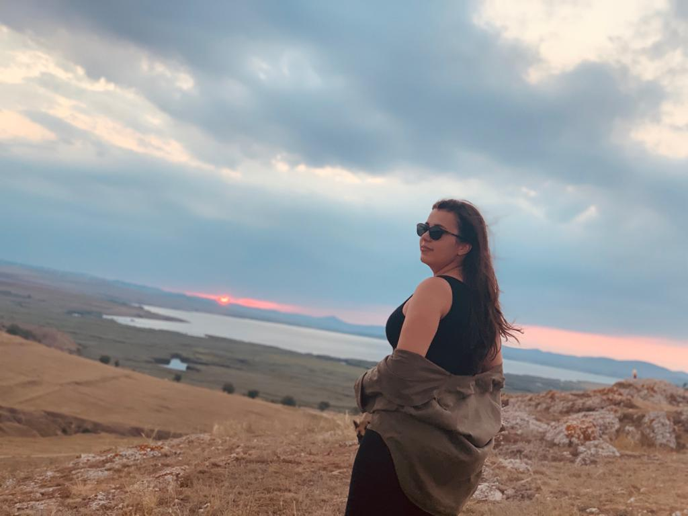

More about me
 I love to break away from reality, from my daily routine. I like the feeling of being
in a new place, where no one knows me, and I can do whatever comes to my mind and I don't care too much
if someone judges me or not. An example: in Italy, you see many people walking in the central markets
and having lunch, brought from home. In Romania, normalcy is altered. Everyone looks at you strangely if
you are a little out of print.
I love the feeling when I go out the door with my backpack and get
ready for a new adventure. Even if it's not all planned out, I like spontaneous things.
I've become
much more resourceful since I started traveling, I say. I'm not ashamed to ask people if I don't know
something, I do very well with maps, with public transport in big cities, I manage to understand people
much better, even if sometimes we don't speak the same language. Sign language also helps a lot.
So,
this is a site that is intended for people who want to break away from reality by investing in
themselves. To look at different pictures from known or lesser known places and to want to go to that
place. One thing I want you to remember, it's not about the pictures from the places there and the
memories and teachings you stay with.